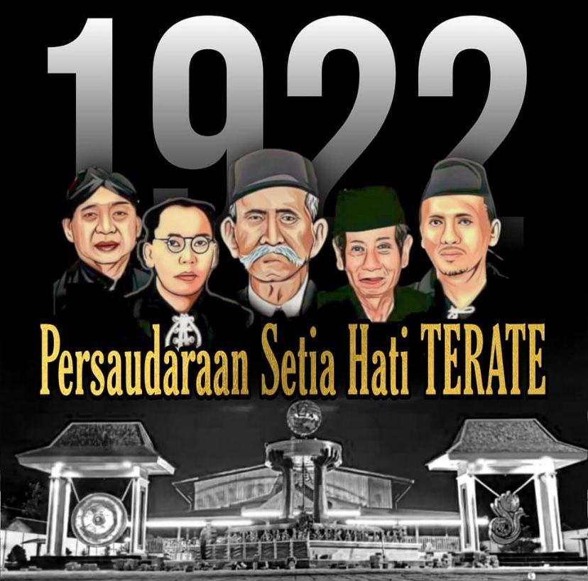

Selamat Datang
Temukan berbagai informasi mengenai sejarah PSHT
PSHT
Di sini, Anda dapat menemukan informasi lengkap mengenai PSHT yang kami sediakan.
PENDIRI
Didirikan di Madiun pada tahun 1922 oleh Ki Hajar Hardjo Oetomo.
SEJARAH
Didirikan di Madiun pada tahun 1922 oleh Ki Hajar Hardjo Oetomo (1888 – 1952), seorang pahlawan Perintis Kemerdekaan RI, PSHT semula bernama Setia Hati Pemuda Sport Club (SH PSC) yang berbentuk organisasi. Nama ini kemudian menjadi Persaudaraan Setia Hati “Pemuda Sport Club” dan akhirnya diubah menjadi “Persaudaraan Setia Hati Terate” dalam kongres pertama di Madiun, 25 Maret 1951. Perkembangan PSHT tidak terlepas dari jasa beberapa tokoh yang turut membesarkan PSHT, diantaranya Bpk. RM Soetomo Mangkudjojo; Bpk. Santoso Kartoatmodjo; Bpk. Irsyad; Mas RM. Imam Koesoepangat dan Mas KRT Tarmadji Budi Harsono, SE. Beliau-beliaulah yang meletakkan berbagai dasar dan me r i nt i s pe ngembangan PSHT yang masih digunakan dan berlaku hingga saat ini. Berkat jasa beliau semua, PSHT sejak lama sudah memiliki AD-ART, mendirikan sebuah yayasan, mengembangkan PSHT dengan membentuk banyak cabang, membangun padepokan sebagai pusat kegiatan PSHT, mendirikan koperasi yang kini akan diperluas dengan melibatkan semua anggota di seluruh cabang, dan makin dikenalnya PSHT melalui berbagai kejuaraan. Kepengurusan yang baru di bawah pimpinan DR. Ir. M. Taufiq SH., MSc. selaku Ketua Umum untuk periode 2016 – 2021, telah menetapkan rencana strategis yang digunakan sebagai pedoman bagi seluruh pengurus di semua tingkatan. Dibandingkan dengan kepengurusan sebelumnya, pada periode ini organisasi PSHT mengalami perubahan struktur dan diperluas dengan menambah bidang Pengabdian Masyarakat untuk lebih mengorganisir kegiatan-kegiatan PSHT yang memberi dampak langsung dan positif terhadap masyarakat..
ALAMAT
Jl. Merak No. 10 dan 17 – Kota Madiun – Provinsi Jawa Timur – Indonesia 63128.
KONTAK
Telp. : (0351) 451548, 491046, 452549, Fax.473356